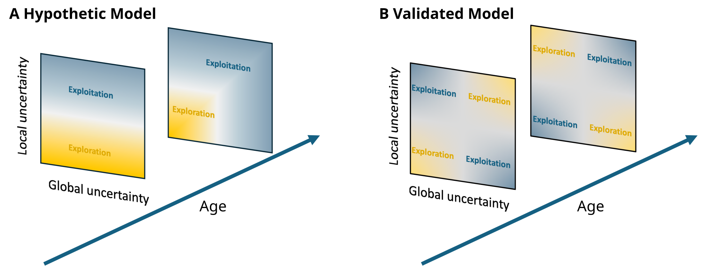
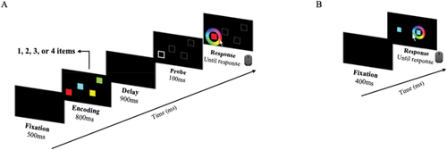
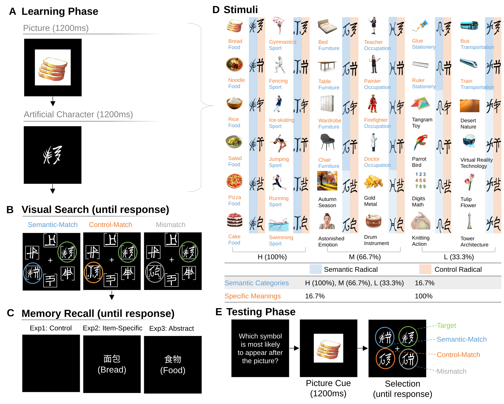
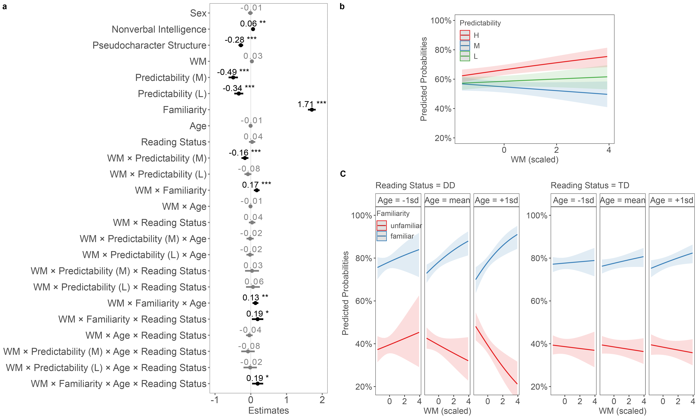
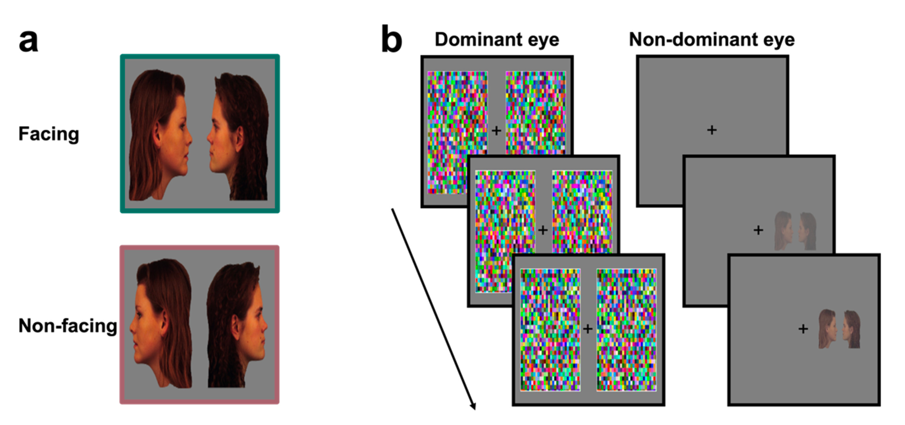

Publications

2026 · Peer-reviewed article
Tong, S. X., Zhang, P., Zhou, M., & Ziegler, J.
Developmental Science, 29(4), e70235

2026 · Peer-reviewed article
An, N., Zhou, M., Ziegler, J. C., & Tong, S. X.
Scientific Studies of Reading, 1–17

2025 · Peer-reviewed article
Zhou, M., & Tong, S. X.
Psychonomic Bulletin & Review, 32, 3264–3275

2024 · Peer-reviewed article
Zhou, M., Zhang, P., Mimeau, C., & Tong, S. X.
Child Development, 95(5), e338–e351

2024 · Peer-reviewed article
Fu, Y., Zhou, M., Zhou, J., Shen, M., & Chen, H.
Journal of Experimental Psychology: General, 153(5), 1268–1280
2026 · Manuscript under review
Temporal dynamics of probability and structure representations during statistical learning
Zhou, M., & Tong, S. X.
2026 · Manuscript under review
Predictive priority shapes human statistical learning in multi-regularity environments
Zhou, M., & Tong, S. X.
2026 · Manuscript under review
Neurophysiological signatures of statistical learning: An EEG meta-analysis
Guo, Q., Wang, X., Zhou, M., & Tong, S. X.